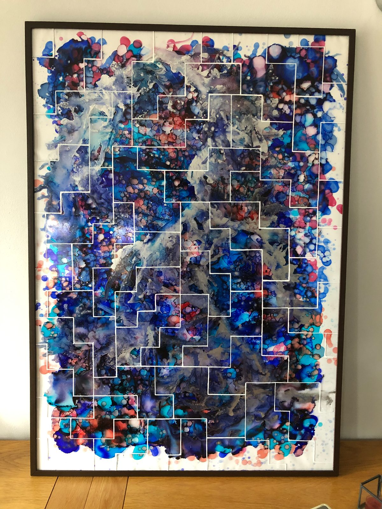
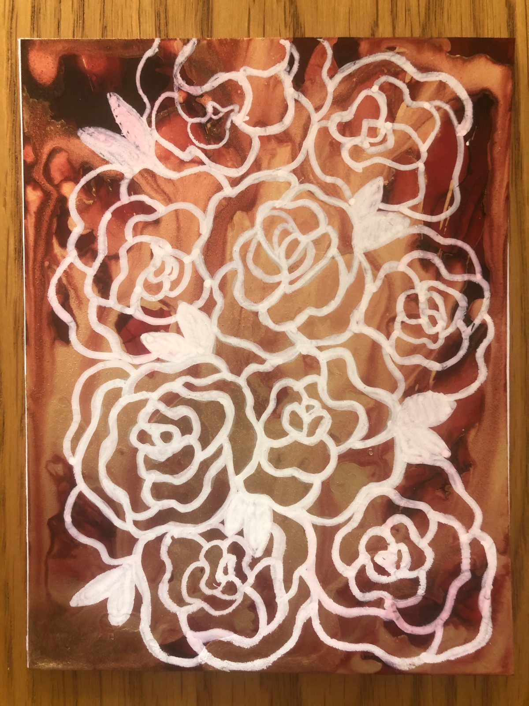
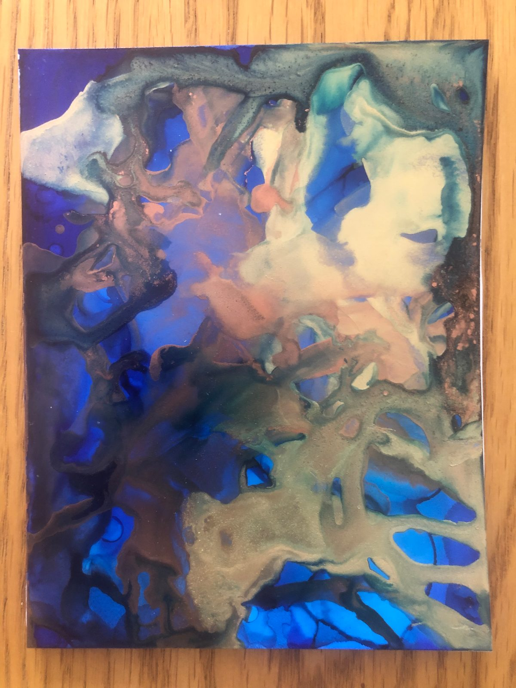
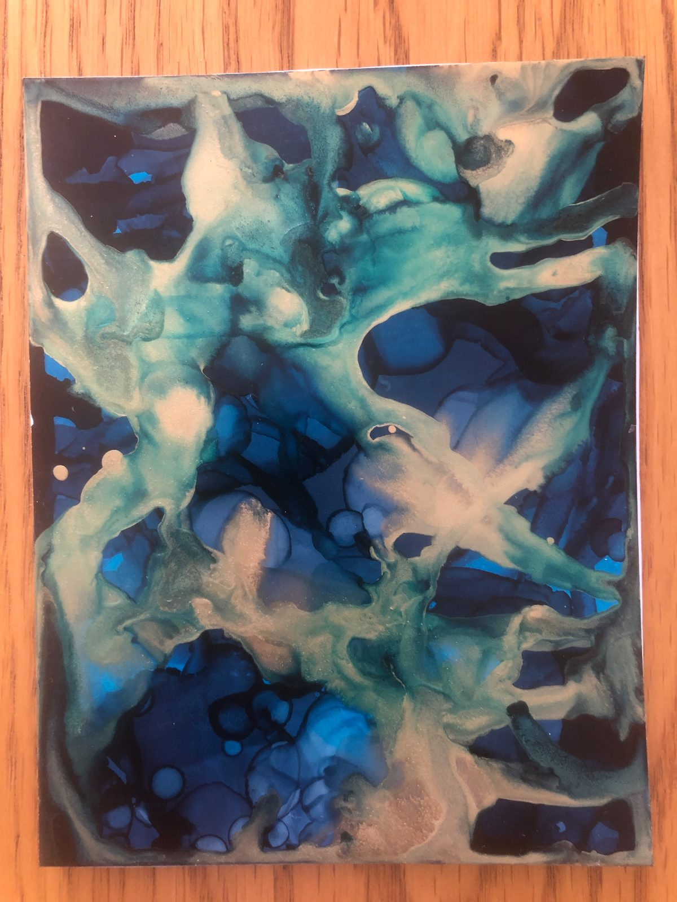
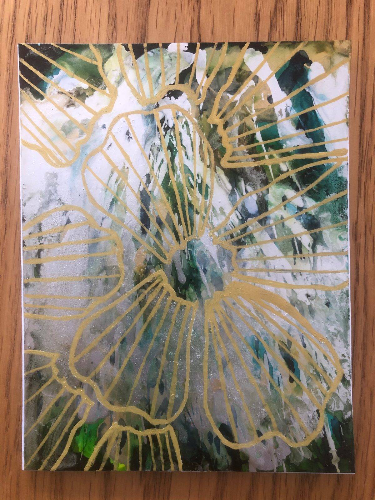

Design that makes history something you can hold.
I’m Ellie Carpenter, a graphic designer. I work across print, bookbinding and object-making to turn research into things people can pick up, open and read for themselves.


Selected work
Grip
An interactive educational body of work exploring the experiences of the Windrush Generation. Everything is held inside a vintage suitcase — a ‘grip’, as Caribbean people called them — and visitors are invited to open it and handle the contents themselves.
Inside are two hand-bound books built from Phillips family photographs and the 1971 words of my great-grandfather, R.E.K. Phillips, alongside laser-engraved objects that carry the research: a domino set, a keyring, Red Stripe bottles whose labels tell the story of the shebeens.


Two books, one family
Hand-bound volumes setting Phillips family photographs against my great-grandfather’s testimony, printed as duotones and set in typewriter type.

Objects that carry research
A domino set, a keyring, engraved tags and printed ephemera — each object standing for a part of Caribbean culture carried to Britain.
Made to be opened
Installed so visitors could handle everything — the interpretation written to welcome people who knew nothing about Windrush.
R.E.K. Phillips, 1971 — from the books inside Grip“I do not understand West Indians who turn their back on their roots”
Earlier work
Paintings in ink
Before Grip I painted in alcohol ink — poured onto a surface that will not absorb it, left to bloom into cells and tidelines no brush could draw, then worked back over with metallic line and opaque white. Framed originals and studies.

Blue & Copper

Jellyfish

Red & Gold

Tessellation

Roses

Branching

Tidal

Poppies

About
I design to educate, and to keep things from being forgotten.
I graduated from Leeds Arts University in 2024 with a first-class BA in Visual Communication. My work is print-led and hands-on: I like the point where research stops being a document and becomes an object — a book you can open, a tag you can turn over, a suitcase you are allowed to unpack.
Grip, my final major project, taught me most of what I now care about as a designer: that storytelling and inclusive design belong together, and that history lands differently when someone can hold it in their hands.
I came to design through painting, and still work in alcohol ink. Prints and work in progress go up on Instagram as @_printsbyel.
- Education
- BA Visual Communication (First), Leeds Arts University — 2024
- Practice
- Print, bookbinding, typography, object & exhibition design
- Interests
- Inclusive design, heritage & archives, storytelling, design for good
Contact
Let’s make something worth keeping.
I’m open to studio roles, freelance projects and collaborations — particularly work with a heritage, education or community brief. The quickest way to reach me is LinkedIn.